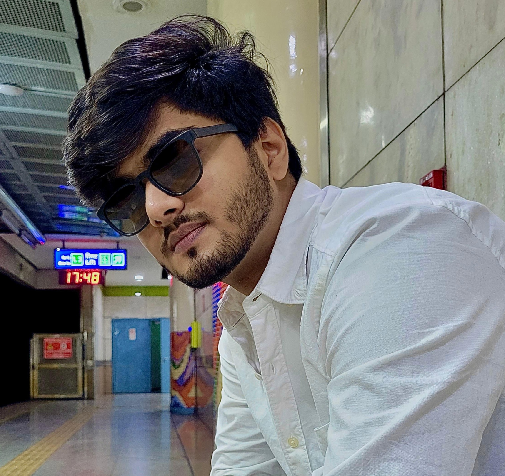

Aayush Rai
I am a Robotics and IoT Engineer with a strong interest in intelligent automation and embedded
systems. Currently, I work at DSI Robotics, where I design and develop smart robotic and GIS-integrated
solutions. Previously, I built an IoT-enabled carrier lift system (now patent-filed) and a
gesture-based home automation model using edge-computing, computer vision and machine learning. I completed my
B.Tech in Electronics and Communication Engineering with a minor in Computer Science, where I
developed a keen interest in the intersection of hardware, software, and intelligent control systems.
In my free time, I enjoy singing, playing the guitar, and brainstorming new ideas and projects.
patents
-
IoT Enabled Carrier Lift System for Retrieval and Delivery of
Essentials
Aayush Rai | Self-Drafted
Bachelor's Major Thesis | Patent Filed (Application No. 202511021556)
The prototype underwent extensive functional and performance testing, including
load capacity verification, multi-floor travel stability, joint rotation accuracy,
battery endurance, and IoT control reliability.
Documents |
Code |
Publication
publications
-
Hand Gesture Operated Multipoint Control Switch
Aayush Rai | Dr. RS Saxena | Dr. Ram Manohar Lohia Hospital
Research Paper Under Review | Clinical Trials in Progress
Edge computing-based system using Raspberry Pi, ESP-32 CAM, OpenCV,
MediaPipe, and Machine Learning to enable people with motor impairments
to control their environment through hand gestures.
Documents
awards
-
YUKTI Innovation Challenge, December 2025
National, AICTE
Position- Fellowship Receiver
Built a soltuion to tie-up the e-waste industry with low level market for effective penetration
-
Sanchaar, September 2024
Inter-college, Delhi
Position- First
-
On-spot Prototyping challenge, June 2023
Inter-Department, GTBIT, GGSIPU, Delhi
Position- First
Built a prototype of a liquid level indicator for a low conductivity liquid
experience
-
Industrial Trainee - Robotics
Sofcon India
Summer 2023 & Follow-up Training
Gained hands-on experience with Atmega family
microcontrollers, sensors, actuators, Embedded C, MPLab, Proteus, and
Serial/Parallel Communication Protocols (SPI, I2C, UART, CAN). Second
training: Focused on edge computing and Internet of Things applications.
Developed strong foundation in embedded systems and practical robotics
implementation.
Certificate | Projects
-
Freelance Robotics Projects
Worked on various projects including components like
Near Field Communication (NFC), Radio-Frequency Identification (RFID),
mobile robots for daily challenges, and multi-microcontroller
master-slave configurations. Gained expertise in working with poorly
documented components, PCB design, soldering, circuit analysis, and simulation tools.
Projects | Feedbacks
-
Research Intern |
State Physics Laboratory, Defence Research and Development Organisation
(DRDO), Delhi
Under Dr. Raghvendra Sahai Saxena (Scientist 'G')
Automated the analysis and extraction of device parameters of
Metal-Oxide Semiconductor capacitors (MOSCAPs) including fixed charge
density, oxide capacitance, rise time, and capacitor characteristics
across high- and low-frequency C–V relations. Studied original research
by William Shockley and John Bardeen, derived relations between
capacitance and voltage of MOS devices, and developed optimized C
program (migrated to Origin C) for automated analysis. Gained exposure
to semiconductor fabrication facilities and cleanrooms. Received Letter
of Recommendation for exceptional results.
Documents | LOR
-
Robotics Engineer |
DSI Robotics | Department of Research and Development
Under Chief Technical Officer
As a Robotics Engineer in DSI Robotics' R&D,
1. Created a web GIS application using QGIS, Python and PostgreSQL (leveraging PostGIS for spatial queries)
to accurately plot manholes and conduit data on a basemap; enabled interactive tools (polygon draw, area/perimeter
calculations, recenter & relocate). Implemented user authentication, containerized the app with Docker, applied
salted+hashed password storage and JWT-based sessions, and integrated Prometheus + Grafana for performance monitoring.
2. Integrated and controlled Tamron industrial cameras via register-level manipulation to enable PTZ and OSD features;
wrote a Python utility to encode text into camera-specific hex commands for on-screen display.
3. Developing STM32-based embedded systems for autonomous robotics: implementing motor control and firmware for a
uger actuation, pan–tilt camera mounts, and bucket lift/lower operations.
Projects
certifications
-
Global Navigation Satellite System
IIRS, Indian Space Research Organisation
Overview of GNSS | Issued January, 2024 | Grade 'A'
Completed a comprehensive course on Global Navigation Satellite Systems (GNSS),
covering satellite constellations, signal structures, and triangulation techniques.
Gained insights into major systems like GPS, GLONASS, Galileo, BeiDou, and NavIC,
along with error correction methods and integration with GIS. Explored applications
in geospatial mapping, autonomous navigation, and real-time tracking.
Certificate
-
German-I
NPTEL, Indian Institute of Technology, Madras |
Introduction to german | Issued May, 2025 | Grade 'Elite'
Completed an introductory course in German language, focusing on basic grammar, vocabulary,
and conversational skills. Topics included sentence structure, verb conjugations,
common phrases, and cultural insights. Achieved proficiency in reading, writing,
and basic communication in German. Currently pursuing German-II for advanced skills.
Certificate
skills & expertise
-
Embedded Systems: AVR family, Raspberry Pi, ESP-32,
Arduino, STM32
- Programming: Embedded C, C, Python, Origin C, LaTeX
- Database Management system: PostgreSQL, PostGIS
- Communication Protocols: SPI, I2C, UART, CAN, NFC, RFID
-
Software & Tools: SolidWorks, OpenCV, MediaPipe, MPLab, Proteus,
Blynk IoT, Sinric Pro
-
Hardware Skills: PCB design, soldering, circuit analysis, sensor
integration
-
Specializations: IoT systems, edge computing, machine learning
for robotics, automation
{kind=link}